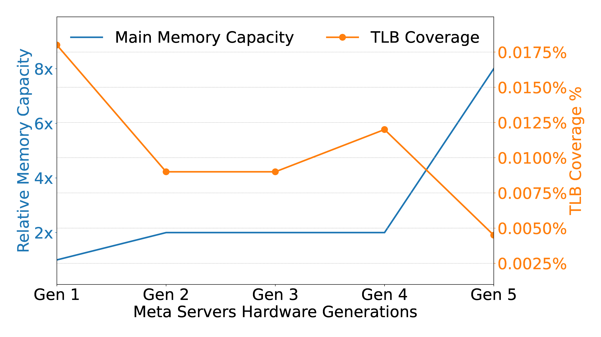
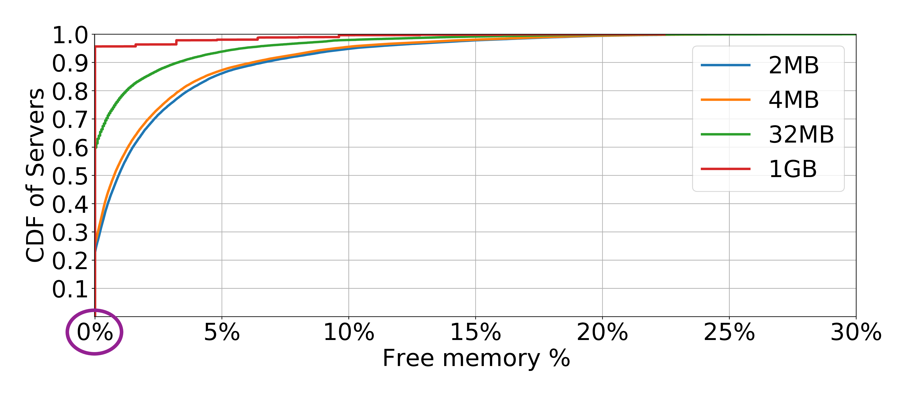
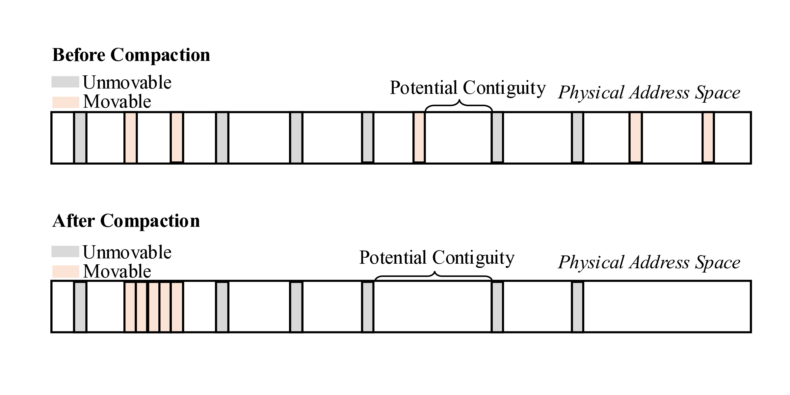
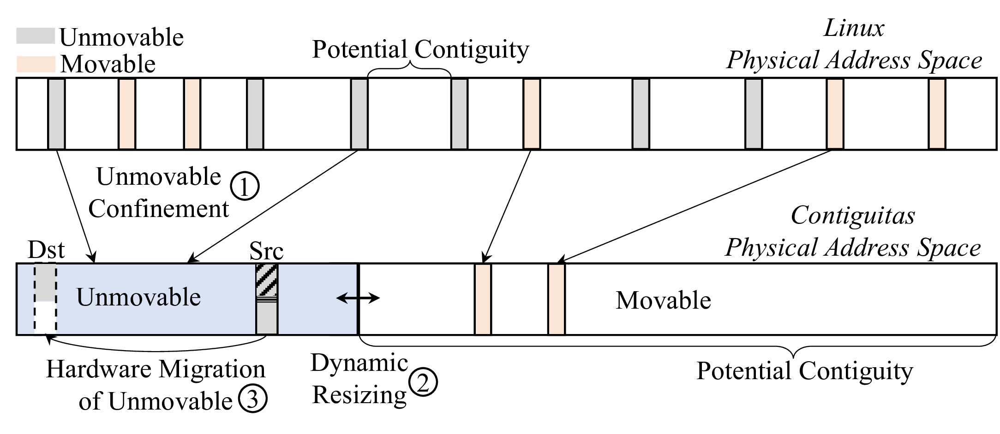
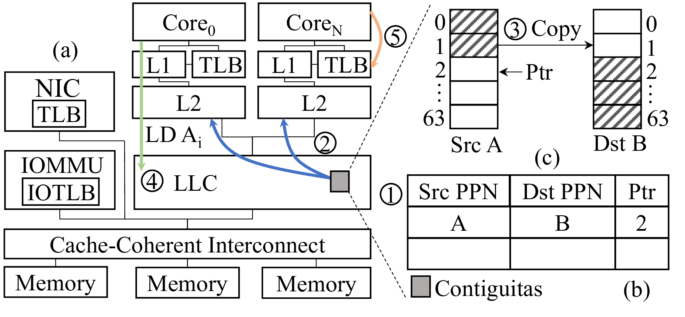
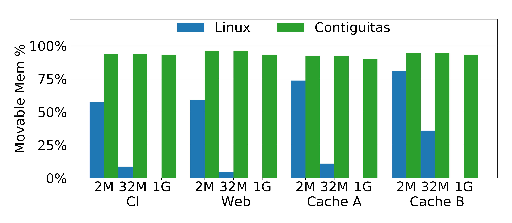
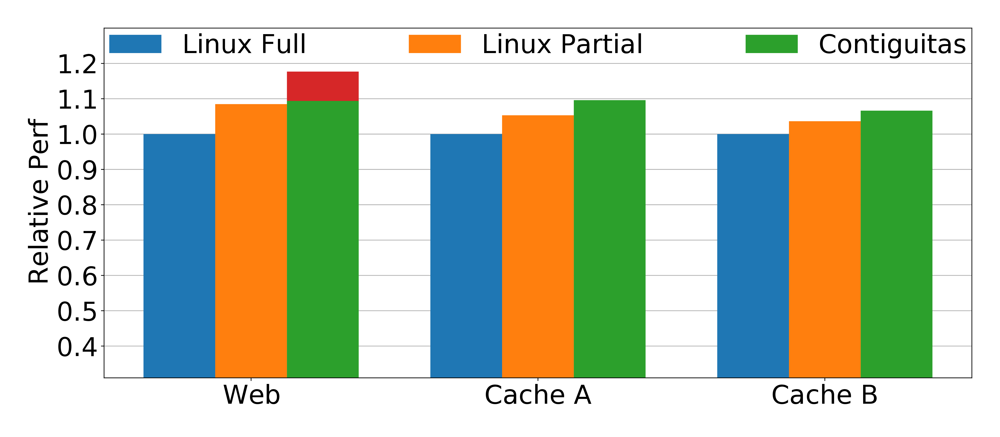

Contiguitas: The Pursuit of Physical Memory Contiguity in Datacenters
Introduction
Virtual Memory is Essential
Applications access their data in the memory using virtual addresses, which tell the hardware where to fetch or store a particular piece of data. Virtual addresses are mapped to physical addresses referencing the actual memory provided by the hardware (i.e. main memory) in the units of pages. Pages can be of different sizes. On x86-based systems, the supported page sizes are 4KB, 2MB and 1GB. The set of physical addresses that a page is mapped to is identified by a Physical Page Number (PPN). The mappings between virtual and physical addresses are controlled by the operating system (OS) in a manner that is transparent to applications. This abstraction is called virtual memory.
Virtual memory provides many benefits. It supports the isolation of applications’ memory, meaning that an application can only access memory that is assigned to it by the OS. Therefore, an application cannot access memory owned by another application by default. Virtual memory also supports the protection of memory so that only allowed modes of access (a combination of read, write and execute) to an application’s memory is allowed. Furthermore, virtual memory introduces flexibility into memory management. For example, multiple applications can coexist on a system without prior coordination on which part of the memory each can use, because each application has a dedicated view of memory.
The Worsening Virtual Memory Bottleneck
The virtual memory abstraction is not free. Every time a virtual address is translated into a physical address, page tables (the data structures set up by the OS to map the addresses) must be accessed, creating an overhead. To mitigate the overhead, the hardware contains a cache for the frequently used mappings between virtual and physical addresses in page tables, called the Translation Lookaside Buffer (TLB). Unfortunately, the unabating growth of applications’ memory needs means that more mappings in page tables are needed, making the TLB less effective and creating a virtual memory bottleneck. In reality, memory capacity has increased dramatically over the past few decades, increasing from dozens of kilobytes to terabytes, but the TLB is size-constrained due to limitations of hardware cache scaling. As a result, the percentage of mappings that can be cached in the TLB versus the total number of mappings needed for a large memory footprint of an application, called TLB coverage, keeps dropping. This drop in TLB coverage results in excessive virtual memory overhead for memory-intensive applications.
Case in point, as shown in the figure below, the memory capacity of servers at Meta (shown by the blue line and the left y axis in the figure) has increased by almost eight times over five hardware generations (x axis). However, the size of the TLB remains stagnant, leading to minuscule and shrinking TLB coverage (the orange lines and the right y axis). Google’s profiling further revealed that approximately 20% of CPU cycles in their datacenters are stalled on TLB misses [1].
Unfortunately, this problem is only bound to get worse due to: (i) the inherent hardware limits of TLB size scaling, (ii) terabyte-scale memory capacity through technologies like Compute Express Link (CXL), and (iii) the increase of memory-intensive applications such as those for graph processing, caching and scientific computing.
Solutions Rely on Memory Contiguity
Existing solutions to reduce the overhead of virtual memory rely on memory contiguity: i.e., ranges of memory that are either free or in-use by a single application. These solutions consider a contiguous range of memory as a single unit, therefore, reduces the size of TLB needed to cache the mappings of a given amount of memory. In addition, some solutions map an entire application’s dataset using memory contiguity [2], and some others use alternative virtual memory designs that require less memory contiguity for good performance [3, 4, 5].
Memory Contiguity is Scarce in Datacenters
Memory contiguity is diminished as a system runs because the time intervals between the allocation and the freeing of ranges of memory vary widely, causing in-use memory to be sandwiched between free memory. This phenomenon is called memory fragmentation.
There are many prior works suggesting that memory contiguity is in low supply due to memory fragmentation [6,7]. To test whether this is the case, we performed a detailed investigation of memory contiguity at hyperscale across Meta’s datacenters. We sampled servers across the fleet, and we show the memory contiguity distribution in the following figure. The values on the x-axis represent the amount of contiguous free memory of a particular size (2MB, 4MB, 32MB, 1GB) as a percentage of total free memory on a server.
Looking at the x-axis value at 0% (circled in the figure), we see that 23% of servers do not even have physical memory contiguity for a single 2MB huge page. We observe that memory contiguity worsens at 4MB and 32MB, with 60% of servers unable to allocate a single 32MB page. We also find that it is practically impossible to dynamically allocate 1GB pages in production, with over 90% of servers having no such contiguity.
Furthermore, our analysis shows that there is little to no correlation between memory contiguity and server uptime, with the Pearson correlation coefficient between server uptime and the number of free 2MB pages being only 0.00286. The low correlation means that fragmentation affects all servers. In practice, servers can quickly get heavily fragmented within the first hour after boot-up while the mean server uptime is days or weeks—turning memory fragmentation into a major challenge.
Finally, our study exposes unmovable pages as the root cause for the lack of physical memory contiguity. Memory compaction recovers memory contiguity by migrating away in-use pages to create contiguous free areas in physical memory, as illustrated by “Potential Contiguity” in the figure below. Unmovable pages, as their name suggests, cannot be moved around to defragment the memory and recover memory contiguity, causing compaction failures. This is illustrated in the figure below: compaction cannot migrate the unmovable pages, failing to create larger memory contiguity. In particular, we identify several sources of unmovable pages, including networking buffers, filesystems, and page tables.
Contiguitas Design
To address the lack of physical memory contiguity and alleviate the virtual memory overhead, we introduce Contiguitas with the goal of eliminating fragmentation due to unmovable pages. To that end, Contiguitas first redesigns memory management in the OS to confine unmovable pages and completely separate them from movable ones (Step 1), preventing unmovable pages from scattering across the address space. Then, Contiguitas dynamically resizes regions in response to memory pressure (Step 2). Finally, Contiguitas drastically reduces previously unmovable pages through hardware extensions in the last-level cache (LLC) that enable transparent migration of unmovable pages while they are in use (Step 3).
Unmovable Confinement
The first design principle of Contiguitas is to strictly separate unmovable from movable pages using two dedicated regions, the movable and the unmovable regions in the physical address space.
Allocations are confined in their respective region. Contiguitas categorizes the physical pages based on their addresses and keeps them on distinct free lists for each region. Memory in each region can only be allocated from pages in the free lists belonging to that region. When a page is freed, it is returned back to its respective list. This approach simplifies the critical path of allocations as the OS can quickly pick a free page while avoiding mixing different types of allocations. For allocations that are first allocated as movable but later become unmovable due to memory pinning, Contiguitas migrates them to the unmovable region and marks them as unmovable. This approach avoids the dynamic pollution of the movable region and subsequent compaction failures.
Dynamic Resizing
The crucial part in achieving confinement is the sizing of the unmovable region. If it is too big, unused memory in the unmovable region is wasted while there is limited movable memory for the applications, causing frequent reclaims or even allocation failures. On the other hand, if the unmovable region is too small, unmovable pages may fail to allocate. Therefore, Contiguitas dynamically balances the sizes of the movable and unmovable regions while not negatively affecting application performance. There are three major challenge in dynamic resizing.
Challenge 1: Moving Resizing Off the Critical Path
The first challenge is to move resizing operations off the critical path of memory allocation. Contiguitas performs resizing off the critical path of memory allocation to avoid latency overheads during allocation. This is accomplished by monitoring the amount of free memory when periodic memory reclaim (i.e. freeing up memory) is triggered by the kernel. Contiguitas extends reclaim to wake up a kernel thread to perform resizing whenever the free memory in either region falls below a low-watermark threshold.
Challenge 2: Resizing Policies
The second challenge is to decide when and how much to resize. Contiguitas introduces the concept of per-region memory pressure and extends pressure stall information (PSI) [6] to track time wasted due to lack of free memory in the movable and unmovable region separately, which is then used to calculate the expansion/shrinking amount.
Challenge 3: Making Resizing Possible and Cheap
The third challenge is to ease resizing and reduce data movement. Contiguitas introduces a bias to prefer physical pages further away from the region border. Some unmovable pages that are inherently long lived (e.g., kernel code pages) are safely placed by Contiguitas early on at the end of the unmovable region that is farthest from the movable region. On the other hand, pages that are initially in the movable region and later on pinned to memory and migrated to the unmovable region often exhibit short lifetimes. In general, Contiguitas prefers allocating pages away from the region border as long as sufficient free space is available in order to avoid unmovable pages blocking resizing and to reduce the amount of data movement needed for resizing. Furthermore, for the unlikely case of unmovable pages blocking the reduction in size of the unmovable region, the hardware migration mechanism of Contiguitas described below can be utilized to move such pages away.
Hardware Migration of Previously Unmovable Pages
The second design principle guiding Contiguitas is to drastically reduce the amount of unmovable pages by turning them into movable ones. Our study at Meta’s datacenters revealed that a significant portion of unmovable pages used for input/output (I/O) are impossible to move as access to the page cannot be blocked for a software migration to take place.
Hardware support is required because it is impossible for software to move such pages as it cannot atomically perform both the mapping update in the page table and the page copy operation of the application data. Hence software has to block access to the page for the duration of page migration in order to avoid spurious writes to it. Even if access to the page could be blocked, software page migration induces a long downtime due to (a) TLB invalidations that scale poorly with the number of TLBs that need invalidating, and (b) the page copy.
To this end, Contiguitas enables transparent page migration while the page remains in use. Such migrations can substantially reduce the size of the unmovable region and lead to more efficient defragmentation and memory management as the vast majority of pages can be moved on demand. While Contiguitas is motivated by unmovable pages, its design is suitable for both movable and unmovable pages.
The hardware extensions of Contiguitas are located in the LLC as shown in the figure below. Contiguitas targets a multi-core processor with a cache-coherent interconnect. The hardware platform further includes an Input-Output Memory Management Unit (IOMMU) with local TLBs.
At a high level, Contiguitas aliases a physical page under migration with a destination page and redirects appropriate traffic to the destination page based on the progress of the migration. Specifically, a page migration is initiated in Step 1 by the OS that provides the source and destination physical page numbers (PPN) to Contiguitas. Contiguitas stores them in a metadata table (part b in the figure) along with a Ptr field that points to the next line to be copied, and enables access redirection. For the next step, Contiguitas starts the page copy. Contiguitas copies a cacheline by bringing it into the LLC (Step 2) and copying it from the source to the destination (Step 3). Finally, it increments Ptr. This process continues until the page is copied and Contiguitas notifies the OS.
During this process, a page may be accessed with either the source or the destination mapping. If a request hits in the private caches (L1 and L2 caches), it is serviced normally as in a regular cache hit. As shown in Step 4, on a miss Contiguitas checks whether a line is currently stored in private caches with the opposite mapping of the request, i.e., if a request is for the source mapping and the line is stored with the destination mapping, and vice versa. If so, it invalidates any cached copy. Otherwise, the request is serviced regularly. This invariant allows the caching of lines under migration as only the source or the destination mapping is active in the private caches.
Upon the completion of page copying, the OS modifies the page table entry to point to the destination page and starts local TLB invalidations, shown in Step 5. In Contiguitas, TLB invalidations do not require the slow inter-processor interrupts (IPI), as both mappings are concurrently active during the migration. The source page has now been migrated and does not block memory compaction anymore.
Results: Ample Contiguity in Datacenters
We implement the OS component of Contiguitas in Linux and run our experiments in Meta’s production datacenters with four production workloads: a continuous-integration service (CI), a web server (Web), and two caching services (Cache A and Cache B).
Potential Memory Contiguity
To quantify the impact of Contiguitas on memory contiguity, we compare each workload’s steady state under Linux and Contiguitas. Specifically, we quantify the contiguous regions that can be formed if we run a perfect software compaction in order to service allocation requests of 2MB, 32MB and 1GB pages.
With Linux we see that some 2MB allocation are possible as there is still some physical memory not polluted by unmovable pages. However, Linux struggles as we search for larger contiguous regions at 32MB granularity, and fails to find even a single 1GB page. On the other hand, Contiguitas isolates the unmovable region by design and hence the whole movable region can potentially be used after compaction for large contiguous allocations, even 1GB pages.
End-to-End Performance
To measure Contiguitas’ improvements to end-to-end performance due to increased memory contiguity, we use requests per second under certain latency targets based on the characteristics of each workload. We consider two setups: Full Fragmentation (Linux Full) and Partial Fragmentation (Linux Partial). Full Fragmentation represents the case where a workload lands on a server whose memory is already fully fragmented without any 2MB memory contiguity. Partial Fragmentation represents the case where a workload lands on a partially fragmented server at random that is representative of the majority of servers at Meta.
Contiguitas achieves performance improvements between 2-9% for partially fragmented servers that represent the majority of the servers, and between 7-18% for fully fragmented servers that represent nearly a quarter of Meta’s fleet. Notably, Contiguitas’ contiguity gains enable Web (one of Meta’s largest services) to dynamically allocate 1GB huge pages, leading to a 7.5% performance win (shown as the red bar) that is unattainable with 2MB pages alone.
Hardware Evaluation
We use full-system simulations to show that Contiguitas efficiently migrates previously unmovable pages without affecting application performance. We consider two open source applications – Memcached and NGINX – to cover applications that do and do not benefit from huge page availability.
Even at a rate of 1000 pages migrated per second, which would be unwarranted for a real environment, the page migrations conducted by Contiguitas do not have a negative impact on both applications’ performance compared to the Linux baseline. When combined with the benefits of contiguity and 2MB huge pages, Memcached performance improves by 7%.
Furthermore, Contiguitas scales well with the number of TLBs, keeping the page unavailable time during a page migration constant and equal to the time of a local TLB invalidation, whereas under status quo the page unavailable time increases linearly.
Overall, Contiguitas does not negatively impact applications that do not benefit from contiguity while improving contiguity and performance for those that do.
Conclusion and Impacts
Contiguitas is a holistic solution that addresses the long-standing problem of memory contiguity in datacenters. We evaluated Contiguitas in a production environment at Meta’s datacenters. Our results show that Contiguitas successfully confines and reduces unmovable allocations, leading to 2-18% end-to-end performance improvements. Contiguitas is in the process of being upstreamed to the Linux kernel [7], and Meta is actively working on deploying it in production.
References
[1] A. Hunter, C. Kennelly, P. Turner, D. Gove, T. Moseley, and P. Ranganathan, “Beyond malloc efficiency to fleet efficiency: a hugepage-aware memory allocator,” in 15th USENIX Symposium on Operating Systems Design and Implementation (OSDI), 2021.
[2] A. Basu, J. Gandhi, J. Chang, M. D. Hill, and M. M. Swift, “Efficient Virtual Memory for Big Memory Servers,” in 40th International Symposium on Computer Architecture (ISCA), 2013.
[3] D. Skarlatos, A. Kokolis, T. Xu, and J. Torrellas, “Elastic cuckoo page tables: Rethinking virtual memory translation for parallelism,” in 25th International Conference on Architectural Support for Programming Languages and Operating Systems (ASPLOS), 2020.
[4] B. Pham, V. Vaidyanathan, A. Jaleel, and A. Bhattacharjee, “CoLT: Coalesced Large-Reach TLBs,” in 45th International Symposium on Microarchitecture (MICRO), 2012.
[5] S. Gupta, A. Bhattacharyya, Y. Oh, A. Bhattacharjee, B. Falsafi, and M. Payer, “Rebooting virtual memory with midgard,” in 48th International Symposium on Computer Architecture (ISCA), 2021.
[6] J. Weiner, N. Agarwal, D. Schatzberg, L. Yang, H. Wang, B. Sanouillet, B. Sharma, T. Heo, M. Jain, C. Tang, and D. Skarlatos, “TMO: Transparent memory offloading in datacenters,” in 27th International Conference on Architectural Support for Program-ming Languages and Operating Systems (ASPLOS), 2022.
[7] “A Reliable Huge Page Allocator,” https://lore.kernel.org/lkml/20230418191313.268131-1-hannes@cmpxchg.org/, 2023.